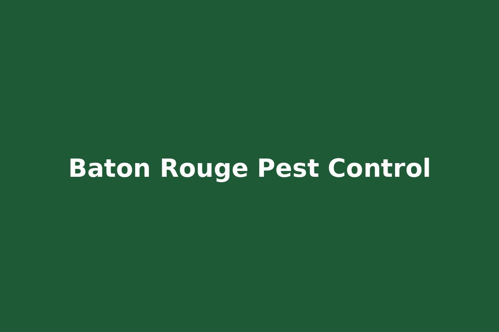
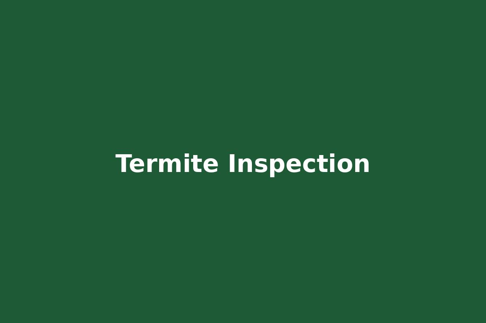
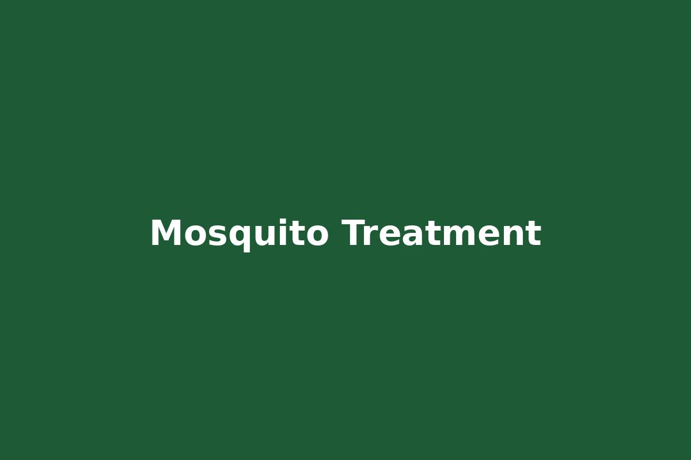

30+ Years Experience
20,000+ Customers Served
Salvant Environmental Services provides professional pest control, termite treatment, mosquito control and wildlife removal throughout Baton Rouge Louisiana and surrounding communities.
Years Experience
Customers Served
BBB Rating
Customer Satisfaction

Residential and commercial pest control services across Baton Rouge.

Inspection and treatment programs protecting Louisiana homes.

Mosquito reduction programs protecting outdoor spaces.

Safe removal of nuisance wildlife affecting homes and businesses.
Salvant Environmental Services provides commercial pest control solutions for businesses and facilities throughout Baton Rouge and surrounding Louisiana communities.
"Fast, professional service. Highly recommend Salvant Environmental."
"Solved our termite issue quickly and explained everything clearly."
Baton Rouge pest control • termite control Baton Rouge • mosquito control Baton Rouge • wildlife removal Baton Rouge • residential pest control Louisiana • commercial pest control Baton Rouge
Call today for a free estimate.
📞 Call 225-383-2847